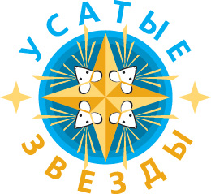

XIII выставка декоративных крыс и других мелких домашних животных
УСАТЫЕ ЗВЕЗДЫ
Москва
25 апреля 2020 года
Очередные весенние «Усатые Звёзды» приглашают всех встретиться друг с другом и с нашими замечательными маленькими питомцами!
С нетерпением ждем в качестве участников:
- Декоративных крыс
- Сирийских и карликовых хомяков
- Морских свинок
- Декоративных кроликов
- Декоративных мышек
- Дегу
- Капибарок
Запись на выставку будет открыта с 1 марта по 10 апреля 2020 года.